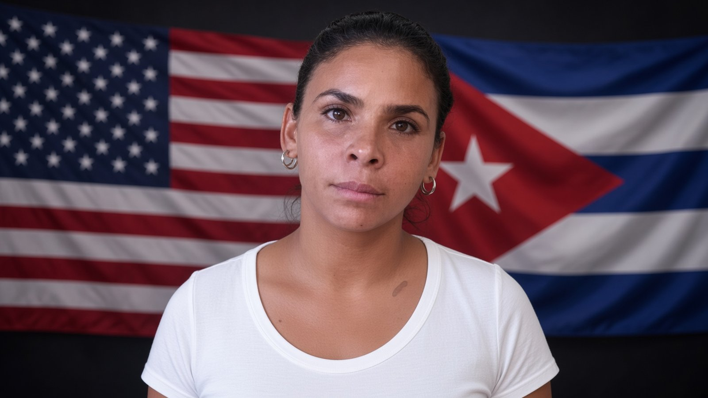

Expediente EXP-007 · Presa política

- NOMBRE:
- Lizandra Góngora Espinosa
- ORIGEN:
- Güira de Melena, Artemisa
- PRISIÓN:
- Los Colonos, Isla de la Juventud
- CONDENA:
- 14 años (sabotaje, desorden público, robo con fuerza)
- HECHO:
- Protestas del 11 de julio de 2021
- FAMILIA:
- Casada con Ángel Delgado Almira. Cinco hijos.
Lizandra Góngora Espinosa vive en Güira de Melena, Artemisa, con su esposo Ángel Delgado Almira y cinco hijos. El 11 de julio de 2021 salió a protestar frente a una tienda en MLC. Pedían que la comida donada se pusiera a la venta. La fiscalía dijo que encabezó la protesta y la entrada a la tienda. Ella dijo que se sumó a la concentración y que huyó después de resultar herida en una pierna en el choque con las autoridades.
La detuvieron el 22 de julio de 2021. La condenaron a 14 años por sabotaje, desorden público y robo con fuerza. Es la pena más alta impuesta a una mujer por el 11J. En 2023 la trasladaron de la prisión de mujeres de El Guatao, en La Habana, al penal de Los Colonos, en la Isla de la Juventud. El esposo ha dicho que solo puede visitarla cada dos o tres meses, y que llevar a los hijos es casi imposible.
En prisión le diagnosticaron un fibroma uterino. También tiene sicklemia. En 2026 su esposo la encontró mal de salud y de ánimo después de meses sin ver a los hijos. En abril de ese año hizo una huelga de hambre de cinco días. En julio, según su primo Ariel Góngora, se declaró plantada en una celda de castigo.
La condena es la del tribunal cubano. La protesta fue pedir comida y decir en la calle lo que el país estaba viviendo.